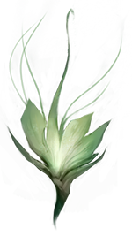

Ahri phủ chiếc áo choàng của cô lên chín cái đuôi và mân mê cặp bảo thạch trên tay để đánh lạc hướng bản thân khỏi cái mùi khó chịu ấy, cô xoay chúng giữa những ngón tay rồi lại chặp chúng lại với nhau. Mỗi viên bảo thạch có một hình dáng của một ngọn lửa, nhưng chúng được chạm khắc tinh xảo đến mức những góc cạnh của chúng có thể ghép lại với nhau, và tạo nên một viên ngọc một cách mượt mà đến hoàn hảo. Cô đã có bên mình những viên đá màu vàng này kể từ trước khi mà cô có thể nhớ được, vì thế nên cô chẳng có bất kì thông tin nào về nguồn gốc của chúng.
Dù Ahri đang ở trong một môi trường mới, cô vẫn cảm thấy dễ chịu bởi những nguồn ma thuật tiềm tàng đang trôi xung quanh người mình. Cô đi qua một gian hàng với hàng tá những rổ đan chứa đầy những viên đá được mài nhẵn, những vỏ sò được khắc với những huyền thoại về một bộ lạc phía bên kia đại dương, những viên xúc xắc được chạm trổ từ xương, và những món đồ bí ẩn khác. Tuyệt nhiên không có thứ gì giống với những viên bảo thạch của Ahri.
“Quan tâm đến một viên đá có màu giống bầu trời à?” một tên thương nhân râu xám hỏi. “Với cô, ta sẽ đổi món trang sức hời hợt màu xanh da trời này với cái giá là chiếc lông của một con quạ khóc, hoặc có thể là một hạt giống từ một cây jubji. Ta sẽ linh động cho.”
Ahri mỉm cười với ông ta, nhưng lắc đầu và tiếp tục bước đi xuyên qua khu chợ, với những viên đá mặt trời trong tay. Cô đi qua một gian hàng với những thứ rau củ gai góc màu cam, một đứa trẻ bán một loại trái cây có thể thay đổi màu theo thời tiết, và ít nhất là ba người bán hàng rong đang vẫy những hộp hương trầm bằng thiếc, mỗi tên đều cho rằng mình đã tìm ra cách thức thiền định sâu sắc nhất.

“Bói đây! Đến và lấy những gì vận may sẽ cho ngươi đi!” lời gọi mời của một người phụ nữ với đôi mắt màu tím oải hương và khuông mặt thon gọn. “Hãy tìm xem ngươi sẽ yêu ai, và làm thế nào để tránh khỏi những tình huống xui xẻo chỉ bằng một nắm rễ cây Ngưu Bàng. Hoặc nếu ngươi thích để tương lai ngươi cho những vị thần, ta sẽ trả lời những câu hỏi về quá khứ của ngươi. Dù sao ta cũng khuyên ngươi là nên tìm hiểu nó đi, nếu không thì ngươi sẽ có nguy cơ mất mạng vì bị đầu độc đấy”
Một tên Vastaya cao kều với đôi tai mèo đang chuẩn bị cắn vào một cái bánh nhồi cay. Hắn ta đứng như trời trồng và nhìn chằm chằm vào ả thầy bói với một sự cảnh giác cao độ.
“Nhân tiện thì câu trả lời của người là không. Miễn phí cho ngươi đấy” cô ả nói, nhún gối chào hắn trước khi xoay sang Ahri. “Giờ thì, cô trông có vẻ như cô có một quá khứ đen tối và bí ẩn. Hoặc là ít nhất có những câu chuyện đáng để chia sẻ đấy. Có thắc mắc bỏng cháy gì cho tôi không, quý cô?”